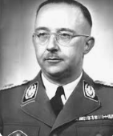
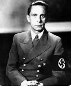
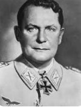
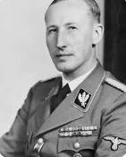
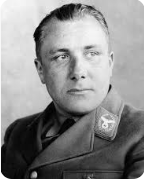
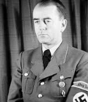

Heinrich Himmler était l'un des principaux dirigeants nazis, responsable de la SS et de la Gestapo.
Il a supervisé les camps de concentration et d'extermination, jouant un rôle clé dans l'Holocauste. Fidèle à
Hitler, il a réprimé brutalement les opposants politiques et les minorités. Après la défaite allemande, il
s'est suicidé en 1945 après avoir été capturé par les forces britanniques.

image de Heinrich Himmler
► Joseph Goebbels
Ministre de la Propagande, Goebbels était chargé de la diffusion de l'idéologie nazie et de la
manipulation de l'opinion publique. Il utilisait les médias, les films, et les discours pour promouvoir les
idées nazies et galvaniser le soutien au régime. Goebbels était un orateur charismatique et un maître de la
propagande.

image de Joseph Goebbels
► Hermann Göring
Commandant en chef de la Luftwaffe (force aérienne) et ministre de l'Aviation, Göring était également
impliqué dans l'économie de guerre. Il a joué un rôle clé dans la réorganisation de l'industrie allemande
pour soutenir l'effort de guerre. Göring était l'un des plus proches collaborateurs d'Hitler et a été
désigné comme son successeur.

image de Hermann Göring
► Reinhard Heydrich
Directeur du RSHA (Office central de la sécurité du Reich), Heydrich était l'un des principaux
planificateurs de l'Holocauste. Il a organisé la Conférence de Wannsee, où la "Solution finale" a été
formalisée. Heydrich était connu pour sa cruauté et son efficacité dans la répression des opposants au
régime.

image de Reinhard Heydrich
► Martin Bormann
Chef de la Chancellerie du Parti nazi, Bormann contrôlait l'accès à Hitler et gérait ses affaires
personnelles. Il exerçait une influence considérable en coulisses et était responsable de la coordination
des politiques du parti. Bormann était l'un des plus fidèles partisans d'Hitler.

image de Martin Bormann
► Albert Speer
Architecte en chef de Hitler et ministre de l'Armement, Speer était responsable de la production de guerre.
Il a réussi à augmenter considérablement la production d'armements malgré les bombardements alliés. Speer a
également conçu de nombreux bâtiments emblématiques du régime nazi.

image de Albert Speer
► Joachim von Ribbentrop
Ministre des Affaires étrangères, Ribbentrop a négocié des alliances cruciales pour le régime nazi,
notamment le pacte de non-agression avec l'Union soviétique (pacte Molotov-Ribbentrop). Il était chargé de
la diplomatie nazie et des relations internationales.